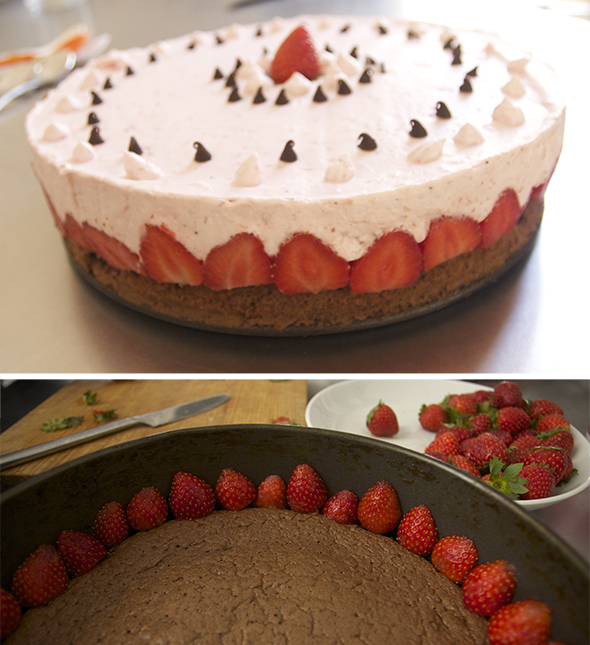

Hannah ha hecho la nata y Hugo y Noah han cortado y colocado todas estas fresas en el borde de esta tarta riquísima.
Hannah made the cream and Hugo and Noah cut and placed all these strawberries on the edge of this delicious cake.
Hannah hat die Sahne gemacht und Hugo und Noah haben alle diese Erdbeeren geschnitten und an den Rand dieser köstlichen Torte platziert.
